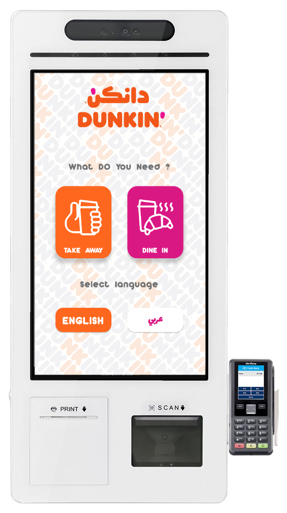
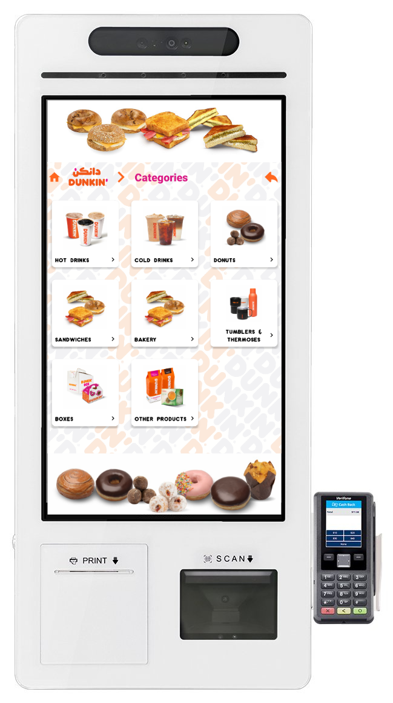
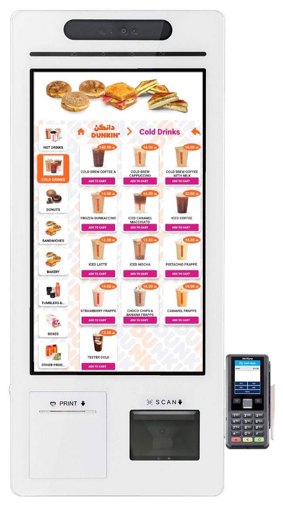
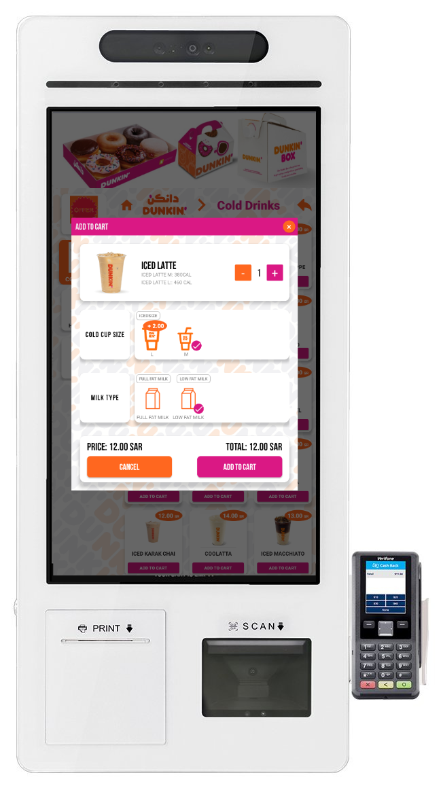
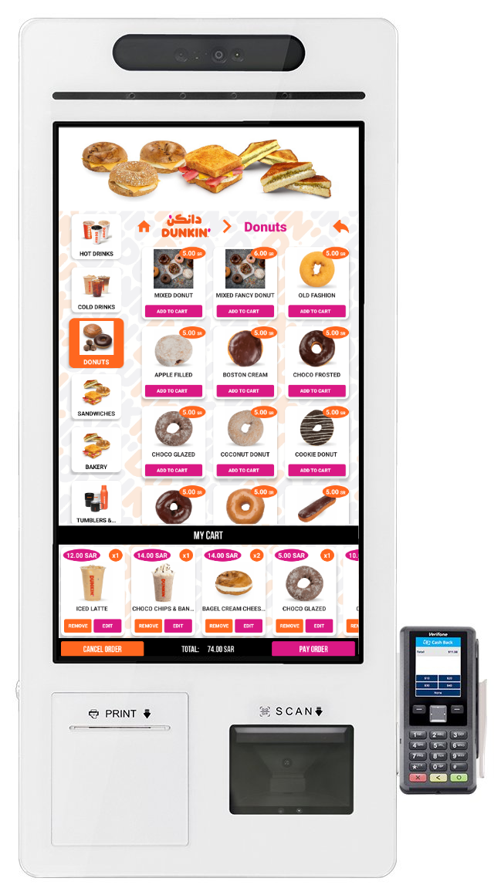
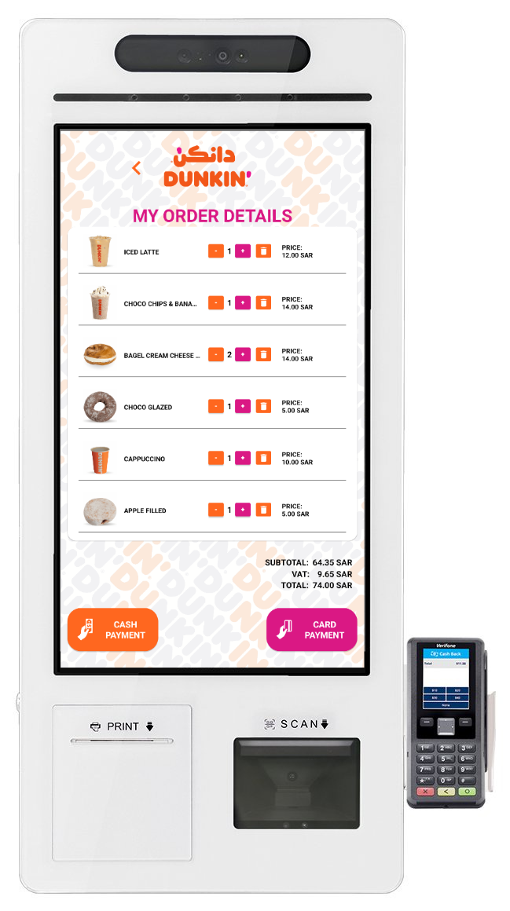
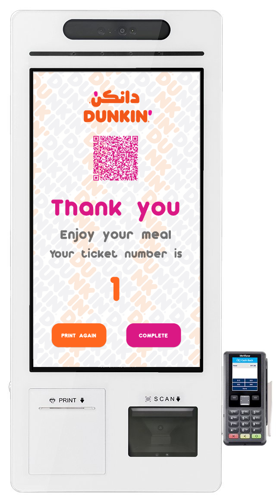

مقدمة
نظام الخدمة الذاتية (Smart Kiosk) خدمة طلب ذاتي مصممة لمنافذ الوجبات السريعة والمطاعم والمقاهي وبيئات البيع بالتجزئة. يبسّط عملية الطلب ويمكّن العملاء من تقديم طلباتهم والدفع دون مساعدة الموظفين. لا يعزز ذلك رضا العملاء بتقليل أوقات الانتظار فحسب، بل يحسّن أيضاً دقة الطلبات وكفاءة الخدمة.
يحوّل نظام الخدمة الذاتية خدمة العملاء من خلال خفض تكاليف العمالة وتحسين دقة الخدمة وتعزيز تجربة المستخدم. يدفع بالكفاءة والربحية مع التكيّف مع احتياجات أعمال المطاعم والتجزئة الحديثة.
نظرة عامة على الخدمة
يقلّل نظام الخدمة الذاتية التكاليف التشغيلية بمنح العملاء التحكم في طلباتهم وتقليل أخطاء الموظفين. يوجّه سلوك العميل عبر البيع الإيحائي والعروض المستهدفة لتعظيم فرص البيع الإضافي. وبتحويل عمليات الدفع رقمياً، يقلّل من فروقات التعامل النقدي. يستمتع العملاء بطلب سريع وبديهي يؤدي إلى رضا أفضل وزيارات متكررة. ومع الباقات المرنة، يناسب الأعمال بجميع أحجامها.
مواصفات الأجهزة
مواصفات اللوحة الأم:
- Rockchip RK3588 / RK3568 / RK3399 – Android 10/11/12
- Intel Celeron J6412 / Intel Core i3-10110U – Windows 11 IoT
- RAM: 4GB (اختياري 8GB)، ROM: 16GB (اختياري 32/64GB)
- 4 منافذ تسلسلية، USB 2.0، USB-C OTG، HDMI، Ethernet، Wi-Fi
- بلوتوث 4.0 اختياري، ودعم 3G/4G
لوحة الشاشة:
- الحجم: 21” / 24” / 27” / 32”
- الدقة: 1920x1080، السطوع: 400 cd/m²
- اللمس: سعوي 10 نقاط، الشفافية: 87±2%
الطابعة الحرارية:
- السرعة: 90 mm/s، الدقة: 203 dpi
- العرض: 80 mm، الواجهة: RS232/USB، ESC/POS
- متوافقة مع Windows و Linux
ماسح ثنائي الأبعاد (2D Scanner):
- الواجهات: USB، RS232
- يفك رموز 1D/2D: QR، Code128، PDF417، وغيرها
- الدقة ≥5 mil، الإضاءة: White LED
قارئ البطاقات:
- قارئ NFC (الطراز M13)، RFID/MSR اختياري
مواصفات أخرى:
- مكبرات الصوت: 10W × 2
- درجة حرارة التشغيل: 0~40℃
- مدخل الطاقة: AC 100–240V
- القاعدة: طاولة / أرضية اختيارية
الوظائف الأساسية
تطبيق بيع ذاتي تفاعلي مطوّر بلغة Java ومُحسَّن لنظام Android. يدعم اللمس المتعدد والإدخال الصوتي، مما يتيح للمستخدمين تصفح القوائم وتعديل الطلبات وإتمام الدفع بشكل مستقل وسريع.
التقنيات المبتكرة
- تفاعل شاشة باللمس المتعدد
- مزامنة فورية مع نقطة البيع (POS)
- مسح آمن لبطاقات NFC ورموز QR
- وحدات ذكية للبيع الإضافي والاقتراحات
دعم تعدد المستخدمين
يدعم نظام الخدمة الذاتية أدوار مستخدمين متعددة مثل Administrator و Branch Manager و Operator، مع صلاحيات ووظائف مخصصة لكل دور. كما يدعم النظام اللغتين العربية والإنجليزية لتعزيز إمكانية الوصول لمجموعات مستخدمين متنوعة.
الميزات الخاصة
- إدارة لافتات الإعلانات
- إدارة استرداد القسائم (الكوبونات)
- تتبع العملاء وبرنامج الولاء
- تخصيص واجهة المستخدم (ألوان العلامة التجارية والشعار)
- تقارير بيانات قابلة للتصدير
- دعم فني متقدم على مدار الساعة
التنقل في التطبيق
بدء نظام الخدمة الذاتية
يبدأ تطبيق نظام الخدمة الذاتية بشاشة تشغيل تهيّئ إعدادات النظام وتتحقق من اتصال الإنترنت ونقطة البيع (POS). تضمن نقطة الدخول هذه الجاهزية قبل عرض الواجهة للعميل. تظهر عادة أثناء إقلاع النظام أو بعد إعادة التشغيل، خاصة عند تفعيل تسجيل الدخول التلقائي على الجهاز.
بعد التهيئة، تُعرض للعميل شاشة الفئات حيث يجب أولاً اختيار اللغة المفضلة (العربية أو الإنجليزية) ونوع الطلب ("Dine In" أو "Take Away").

شاشة بدء نظام الخدمة الذاتية
شاشة الفئات
بناءً على المدخلات السابقة، يوجّه الكشك الطلب وفقاً لذلك. شاشة الفئات هي أول مرحلة تفاعل كاملة مع القائمة، وتعرض جميع فئات المنتجات المُعدّة عبر واجهة إدارة السحابة في المكتب الخلفي. تعكس كل فئة التوفر والأسعار وقواعد الظهور في الوقت الفعلي كما ضبطها المسؤول لذلك الجهاز أو الفرع.
تعمل هذه الشاشة كبوابة لاستكشاف المنتجات وتفاعل العميل، مع ضمان عرض بيانات صحيحة ومحدّثة فقط. أي تغييرات تُجرى من لوحة الإدارة تنعكس بعد تشغيل آخر تحديث، دون الحاجة إلى إعادة تشغيل الكشك أو تحديثه.

شاشة فئات نظام الخدمة الذاتية
شاشة المنتجات
عند نقر العميل على فئة من القائمة، تُعرض قائمة المنتجات المقابلة. يتضمن كل عنصر صورة مصغّرة وعنواناً وسعراً، واختيارياً وصفاً قصيراً. تدعم واجهة الكشك التحديثات الفورية، بحيث تنعكس فوراً أي تفعيلات أو إلغاء تفعيل للمنتجات أو تعديلات الأسعار في لوحة إدارة السحابة. تتيح هذه الواجهة للعملاء التصفح بكفاءة مع تطبيق إعدادات الظهور الخاصة بكل فرع.

شاشة منتجات نظام الخدمة الذاتية
إضافة إلى السلة
عند اختيار منتج، يفتح الكشك عرض تفاصيل المنتج حيث يمكن اختيار الخيارات والمعدّلات. تشمل هذه السمات مثل حجم الكوب والإضافات وتفضيلات التحضير أو إضافات الوجبات المجمّعة. يتحقق التطبيق من إتمام جميع الاختيارات الإلزامية قبل تفعيل زر "Add to Cart". يضمن هذا المنطق المنظم أن تعليمات التحضير في المطبخ واضحة وموحّدة عبر جميع الطلبات.

شاشة إضافة إلى السلة في نظام الخدمة الذاتية
نظرة عامة على السلة
بعد إضافة عنصر، يُعاد توجيه العميل إلى شاشة نظرة عامة على السلة. تعرض السلة جميع العناصر المختارة والمعدّلات وأسعار المجموع الفرعي. من هنا يمكن للعملاء تحديث الكميات أو إزالة العناصر أو العودة للتصفح. تُحدَّث هذه الشاشة ديناميكياً لمنع الإدخالات المكررة وللتعامل مع انتهاء الجلسة للمستخدمين غير النشطين.

شاشة إضافة إلى السلة في نظام الخدمة الذاتية
إتمام الدفع
عند الاستعداد، ينقر العميل على "Pay Order" لبدء عملية الدفع. يطلب الكشك بعد ذلك اختيار طريقة الدفع: نقداً أو ببطاقة ائتمان. بحسب إعداد النظام، قد تدمج هذه الشاشة أيضاً وحدات الولاء أو رموز العروض. بمجرد معالجة الدفع، يسجّل النظام الطلب في نقطة البيع (POS) ومحطة المطبخ في الوقت الفعلي.

شاشة الدفع في نظام الخدمة الذاتية
نجاح الطلب
بمجرد تأكيد الطلب وإرساله، يعرض الكشك شاشة تأكيد "Thank You". يمكن للعملاء اختيارياً طباعة إيصالهم بالنقر على زر "Complete"، وبعدها يُعاد ضبط التطبيق للمستخدم التالي. تختتم هذه الخطوة النهائية الجلسة وتضمن تخزين البيانات بأمان في السحابة وطابور المطبخ.

شاشة النجاح في نظام الخدمة الذاتية
تكامل الكشك مع السحابة
يعمل تطبيق نظام الخدمة الذاتية مباشرة عبر الواجهة الخلفية لـ Cloud Admin. يتم التحكم بالكامل في كل المحتوى المعروض على الكشك—مثل الفئات والمنتجات والمعدّلات والأسعار والعروض—من خلال واجهة الإدارة المستندة إلى الويب. أي تغييرات تُجرى عبر Cloud Admin (مثل تفعيل/إلغاء تفعيل المنتجات، تغيير الأسعار، إنشاء عروض مجمّعة، أو تحديث الترجمات) تنعكس في الوقت الفعلي على شاشات الكشك.
بالإضافة إلى التحكم في القائمة، يتيح النظام الخلفي أيضاً للمسؤولين إدارة فروع متعددة، وتكوين عناصر العلامة التجارية مثل الشعارات ولافتات الإعلانات، وتمكين أو تعطيل قوائم كاملة لكل جهاز أو فرع. يضمن ذلك تجربة مركزية ومتسقة عبر جميع الأجهزة بغض النظر عن الموقع.
يدعم Cloud Admin أيضاً ميزات تشغيلية مثل تتبع الجلسات ومراقبة حالة الأجهزة وسجلات التدقيق، وهي أساسية للأعمال التي تدير أكشاكاً أو مواقع متعددة. يمكن تنفيذ تحديثات القائمة عن بُعد دون وصول فعلي للجهاز، وتُزامَن أي تغييرات في نقطة البيع (POS) بسلاسة لمعالجة الطلبات في الوقت الفعلي.
يقدّم حل نظام الخدمة الذاتية منظومة خدمة ذاتية متكاملة مصممة لعمليات الأغذية والمشروبات الحديثة.
من خلال الجمع بين مكونات أجهزة متينة وبرمجيات ديناميكية مدعومة بالسحابة، يبسّط عملية الطلب ويقلّل أوقات الانتظار ويحدّ من الأخطاء البشرية. النظام معياري بالكامل وقابل للتكيّف مع نماذج الخدمة داخل المطعم أو الاستلام أو الهجينة، ويضمن أداءً أمثل سواء في مواقع مستقلة أو عبر فروع متعددة. من جانب الأجهزة، تُحسَّن الأكشاك للعمل على مدار الساعة بشاشات لمس متينة ووحدات دفع مدمجة وطابعات إيصالات وتصاميم قابلة للتركيب على الحائط أو القاعدة. ومن منظور البرمجيات، تتم معالجة كل شيء—من عرض المنتجات إلى مزامنة نقطة البيع ومسار العميل—في الوقت الفعلي عبر تكامل وثيق مع نظام Cloud Admin. معاً، تتيح هذه الطبقات للأعمال تقديم تجربة عملاء متسقة وسريعة وقابلة للتوسع مع الحفاظ على تحكم مركزي في كل كشك قيد التشغيل.